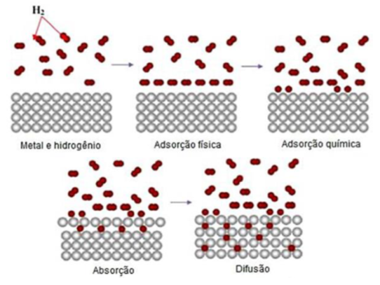
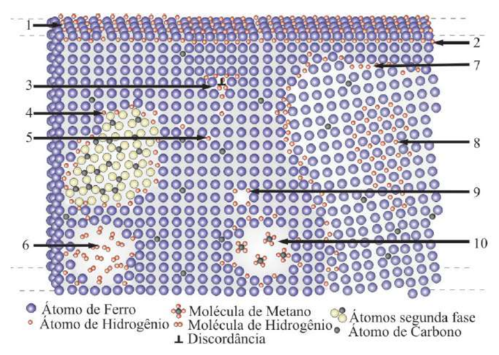
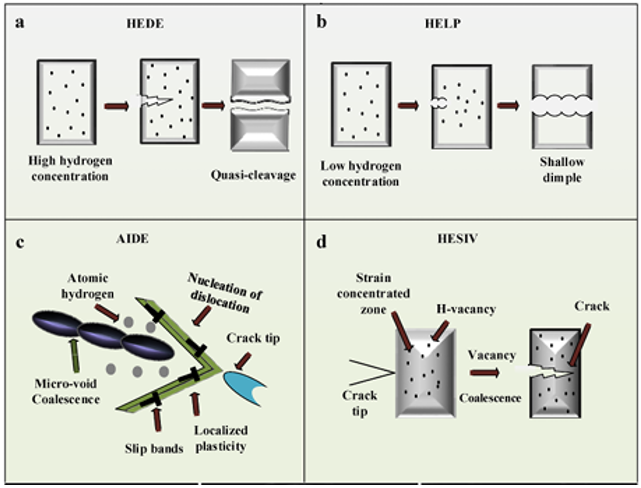
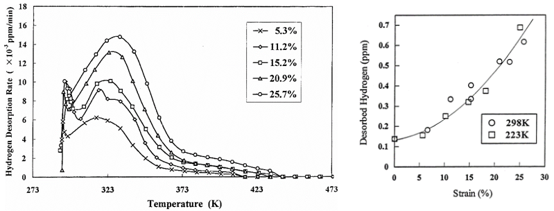
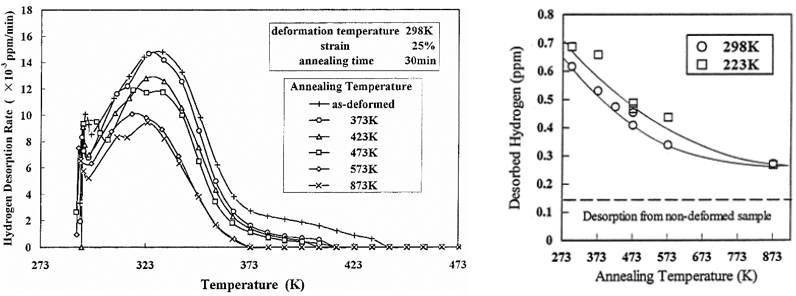
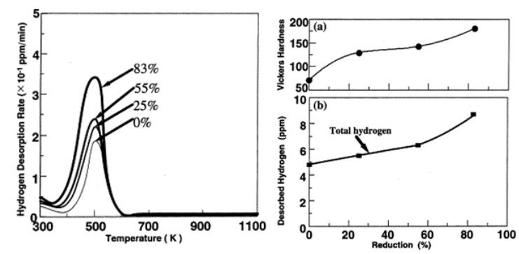
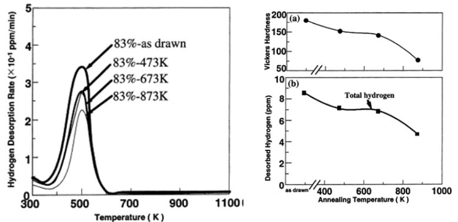
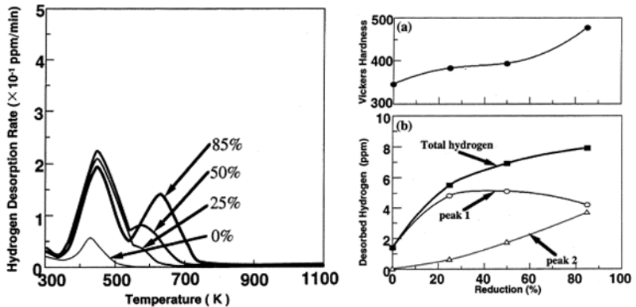
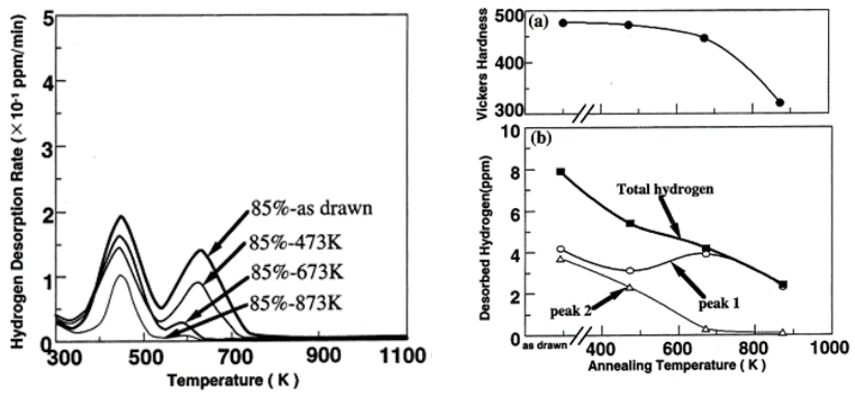
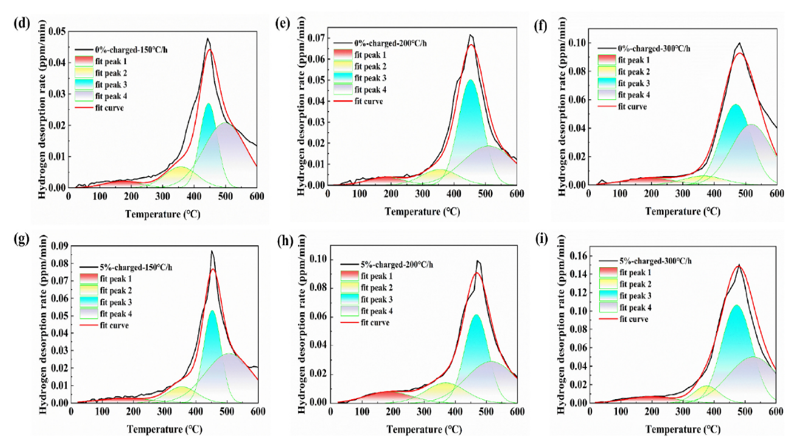

CAPÍTULO 3 INTERAÇÃO ENTRE O HIDROGÊNIO E A MICROESTRUTURA DOS METAIS
3.1 Introdução
A fragilização por hidrogênio (FH) é um fenômeno que reduz as propriedades mecânicas de diversos tipos de ligas, tornando esses materiais frágeis e susceptíveis a falhas súbitas e catastróficas. A fragilização por hidrogênio ocorre principalmente em ligas de alta resistência, geralmente quanto maior a resistência, mais este material é vulnerável. Por possuir o menor raio atômico (0,037 nm), os átomos de hidrogênio penetram facilmente no interior da microestrutura dos materiais, acumulando-se em defeitos microestruturais como contornos de grão, discordâncias, interfaces de segunda fase, entre outros. Quando a concentração de hidrogênio atinge um valor crítico, ocorre uma queda acentuada na plasticidade do material, deterioração da tenacidade e, por fim, uma fratura frágil “imprevisível” sob tensões inferiores ao limite de escoamento, fenômeno conhecido como fragilização por hidrogênio (FH). Esta condição dificulta severamente a escolha de materiais para o transporte e armazenamento de hidrogênio e/ou a exposição de ligas em atmosferas compostas por este gás, onde a concentração do gás, a temperatura e a pressão são variáveis fundamentais para facilitar ou dificultar a entrada do hidrogênio na microestrutura [63-65].
A degradação das propriedades mecânicas dos materiais pela fragilização por hidrogênio, pode ocorrer por uma série de mecanismos que estão diretamente ligados à interação do hidrogênio com a estrutura/microestrutura destes materiais. Essa degradação física e/ou mecânica, pode se manifestar de diversas maneiras como trincas, bolhas, formação de hidretos e/ou perda de ductilidade, causando diminuição de propriedades como resistência à fratura, fadiga e tenacidade à fratura [66-68]. Adicionalmente, a falha por FH ocorre sempre em níveis baixos de tensão e se manifesta por fratura frágil, frequentemente causando grandes perdas econômicas e até catástrofes. Esse fenômeno se inicia pela dissociação, absorção e difusão do hidrogênio pela microestrutura dos materiais, quando expostos a atmosferas com hidrogênio.
3.2 Mecanismo de Interação do Hidrogênio com os Metais
No processo de fragilização por hidrogênio as primeiras etapas são a interação das moléculas de hidrogênio com a superfície do metal (Figura 3.1), onde as moléculas são adsorvidas e dissociadas ou podem se recombinar novamente em moléculas de hidrogênio [69].

Figura 3.1: Mecanismo de interação metal x hidrogênio. Fonte: [70].
A Figura 3.1 mostra que quando a superfície do metal está em contato direto com o gás hidrogênio, ocorre a adsorção física, adsorção química, a absorção e a difusão do hidrogênio metálico. Essas etapas podem ser descritas segundo as seguintes reações:
\[\begin{equation} H_2(g) \rightleftharpoons H_2(\mathrm{ads}) \tag{3.1} \end{equation}\]
Nesta etapa as moléculas do gás hidrogênio são fracamente ligadas à superfície do metal.
\[\begin{equation} H_2(\mathrm{ads}) \rightleftharpoons 2H^+(\mathrm{ads}) + 2e^- \tag{3.2} \end{equation}\]
Nesta etapa ocorre uma reação química superficial com troca de elétrons entre as moléculas de hidrogênio e os átomos do metal, ocasionando a dissociação da molécula do gás.
Após a dissociação este hidrogênio metálico (\(H^+\)) é adsorvido e na sequência se difunde para o interior da rede cristalina e com diferente mobilidade de acordo com os interstícios da estrutura cristalina. Para um cristal ideal, os átomos de hidrogênio se localizam preferencialmente nos sítios tetraédricos da estrutura CCC ou pelos sítios octaédricos da estrutura CFC do ferro, por exemplo [71]. À temperatura ambiente e pressão de hidrogênio de 0,1 Mpa, a relação atômica de hidrogênio dissolvido no \(Fe\) CCC é de 2. 10⁻⁸. Entretanto, na prática, a quantidade de hidrogênio na estrutura do material é sempre maior, porque neste processo os átomos de hidrogênio podem ocupar alguns sítios intersticiais ou se acumularem em regiões de alta energia, conhecidas como sítios aprisionadores de hidrogênio (Figura 3.2). Esses sítios podem ser caracterizados por lacunas, discordâncias, impurezas, contornos de grão/macla ou interface entre partículas de segunda fase e matriz. Isso mostra que a susceptibilidade de um metal à fragilização por hidrogênio não depende somente de sua estrutura, mas também da forma que foi processado.
Com base na energia de ativação dos sítios aprisionadores de hidrogênio ou armadilhas de hidrogênio (\(E_b\)), estes podem ser classificados como armadilhas de hidrogênio reversíveis (\(E_b\) < 60 kJ mol-1) e armadilhas de hidrogênio irreversíveis (\(E_b\) > 60 kJ mol-1). As armadilhas de hidrogênio reversíveis incluem sítios intersticiais, discordâncias, contornos macla e precipitados coerentes, enquanto nas interfaces de carbetos, inclusões e precipitados incoerentes são armadilhas de hidrogênio irreversíveis. Nos aços os valores das energias de ativação para os principais sítios aprisionadores de hidrogênio são 4 – 8 kJ. Mol-1 para os sítios intersticiais, 26,4 – 26,8 kJ. Mol-1 para as discordâncias, 17,8 – 18,6 kJ. Mol-1 para contornos de grão, 66,3 -68,4 kJ. Mol-1 para interface ferrita/cementita e de 79 – 84 kJ. Mol-1 para as interfaces com \(Al_2O_3/MnS\) [72]. Entretanto, salienta-se que estes valores mudam em função da liga avaliada.
Os danos causados pelo hidrogênio em metais são divididos em fragilização por hidrogênio (FH) reversível e irreversível. No caso da FH reversível, os átomos de hidrogênio migram e se acumulam nos campos de tensão próximos às trincas, levando à fratura retardada das ligas. Em contraste, na FH irreversível, os átomos de hidrogênio se combinam entre si para formar moléculas de hidrogênio em sítios defeituosos, gerando alta pressão de gás hidrogênio e trincas induzidas por hidrogênio [68].

Figura 3.2: Mecanismo de interação metal x hidrogênio. Fonte: [70].
3.3 Mecanismo de Fragilização por Hidrogênio
A fragilização por hidrogênio é caracterizada pela geração e propagação de trincas que eventualmente levam à degradação de propriedades mecânicas como ductilidade, resistência à tração e resistência à fadiga, podendo causar a falha do material [68]. As modificações das propriedades mecânicas pela interação do metal com o hidrogênio, se dão por uma série de mecanismos, que podem resultar em falhas catastróficas. Entre estes estão a diminuição da energia de interface nos contornos de grão ou contornos de fase, o acúmulo do hidrogênio na estrutura cristalina que diminui a força coesiva das ligações metal-metal, a formação de bolhas de hidrogênio ou metano nos vazios que geram pressão e favorecem a propagação de trincas. Adicionalmente como o hidrogênio tende a se acumular em regiões com campos de tensões, quando se acumulam nas pontas das trincas pré-existentes facilitam a propagação dessas trincas em níveis significativamente menores de tensão [73].
Existem diversos mecanismos para explicar a fragilização por hidrogênio (Figura 3.3), entre eles podemos destacar:

Figura 3.3: Mecanismos de fragilização por hidrogênio. Fonte: [81].
1 – Teoria da pressão de hidrogênio: Neste, os átomos de hidrogênio se acumulam em locais de defeitos no metal como microvazios, onde se combinam formando moléculas de hidrogênio e com o passar do tempo e a continuação da difusão para esses locais, há um aumento da pressão de gás hidrogênio, levando à trinca induzida por hidrogênio [68, 74].
2 – Teoria da transformação de fase induzida por hidrogênio (HIPT): Este mecanismo ocorre na presença de metais específicos como, \(Zr\), \(Nb\), \(V\) e \(Ta\) que se combinam facilmente com o hidrogênio formando hidretos frágeis espontaneamente ou induzidos por tensão. Em altas concentrações de hidrogênio, estes hidretos se formam espontaneamente. Entretanto, em baixas concentrações iniciais de hidrogênio, com a aplicação de um gradiente de tensão o hidrogênio é redistribuído atingindo concentrações locais para a formação de hidretos em regiões como os campos de tensão próximo à ponta das trincas, fragilizando o material [68, 75].
3 – Mecanismo de decoesão aprimorada por hidrogênio (HEDE): Neste mecanismo, sugere-se que o aumento da concentração local de hidrogênio, em regiões como contornos de grão/fase ou discordâncias, diminui as interações metálicas coesivas, fazendo com que o material se rompa em limites de tensões inferiores. A Figura 3.3 mostra a imagem de uma superfície de fratura do \(Ni\), resultante da diminuição da força de coesão intergranular [76, 77, 68].
4 – Mecanismo de plasticidade localizada aprimorada por hidrogênio (HELP): Esse mecanismo considera que quando o material é submetido à uma força externa, produz regiões com tensões trativas, principalmente nas proximidades das trincas, aumentando a concentração de hidrogênio nessas regiões. Este modelo então propõe que o hidrogênio facilita a movimentação das discordâncias nessas regiões tensionadas, levando a uma redução local da tensão de escoamento, que facilita a propagação das trincas, ocasionado falhas prematuras. Embora esse conceito de plasticidade pareça estar em descordo com o fenômeno de fragilização, a zona de falha dúctil é tão localizada que praticamente não contribui para a deformação macroscópica. Entretanto, ainda é um fenômeno a ser estudados pois, diferentes estudos mostram que o efeito do amolecimento induzido por hidrogênio é significativo no \(Fe\) monocristalino com baixa taxa de deformação e baixa temperatura, mas é desprezível para o \(Al\) [78, 68].
5 – Mecanismo de vacâncias induzidas por deformação aprimoradas por hidrogênio (HESIV): Esse mecanismo considera que o hidrogênio acelera a formação de vacâncias induzidas por deformação. Essas vacâncias podem formar aglomerados em regiões de concentração de deformação próximas à ponta das trincas que coalescem e facilitam a propagação de trincas, diminuindo resistência dos materiais por meio de falhas prematuras[79, 80].
3.4 Influência dos Elementos de Liga na Fragilização por Hidrogênio
Os elementos de liga podem influenciar de forma significativa na interação do hidrogênio com o metal de diversas formas. Eles podem modificar a solubilidade, a difusividade, a distribuição e a estabilidade das fases presentes na microestrutura, o que afeta o modo de aprisionamento do hidrogênio. Assim, o efeito de cada elemento pode ser benéfico ou prejudicial, depende de sua natureza e do equilíbrio entre a composição química e a microestrutura resultante.
Os elementos de liga podem ter um papel fundamental para o aumento da resistência dos aços, mas normalmente aumenta a sensibilidade à fragilização por hidrogênio. Desta forma, uma seleção criteriosa dos elementos de liga é considerada uma estratégia eficaz para aumentar a resistência dos materiais à fragilização por hidrogênio [82-84]. Elementos como o \(Ti\), \(Nb\), \(V\), \(M\)o, entre outros, se mostraram eficazes na diminuição da difusão e adsorção de hidrogênio, pois estes elementos propiciam a formação de uma microestrutura mais homogênea e ao formarem armadilhas irreversíveis para o hidrogênio, diminuem sua mobilidade. Diversos trabalhos [85-89], mostram que esta redução na mobilidade do hidrogênio diminuem a segregação nos contornos de grão aumentando à resistência à decoesão.
Uma das formas mais viáveis para o transporte de hidrogênio gasoso em larga escala, é o transporte por tubulações (gasodutos). Entretanto, os materiais das tubulações são diretamente expostos ao hidrogênio em pressões que podem atingir 10 a 20 Mpa, por longos períodos de tempo. Essa exposição pode causar danos aos materiais e causar falhas muito sérias, como o vazamento de hidrogênio. Entretanto, estudos mostram que a microadição de elementos de liga é um método fundamental para controlar a microestrutura e a susceptibilidade à fragilização por hidrogênio (FH) dos aços para dutos.
Elementos como \(Nb\), \(V\) e \(Ti\) (titânio) podem diminuir a fragilização por hidrogênio por meio do refinamento dos grãos, que promove a nucleação da ferrita, o que aumenta o caminho de difusão dos átomos de hidrogênio e reduz o risco de acúmulo local [90, 91] ou por meio da formação de precipitados nanométricos de carbonetos/carbonitretos (por exemplo, \(NbC\), \(VC\)), os quais geram campos de tensão com a matriz e atuam como armadilhas irreversíveis de hidrogênio, ligando-se de forma estável aos átomos de hidrogênio e reduzindo a quantidade de hidrogênio difusível em locais potenciais de nucleação de trincas e inibindo o \(HIC\) [82, 83]. Ran [63] e colaboradores estudaram o efeito da adição de \(Nb\) e \(V\) na resistência à fragilização do aço para dutos X52C-Mn. |Observaram uma transformação microestrutural de ferrita e perlita (\(X52C\)-\(Mn\)) para uma microestrutura monofásica composta unicamente por ferrita (\(SX52Nb\)-\(V\)), com um número reduzido de discordâncias a qual elimina as zonas de fragilização nos contornos de fase e que também favorece a formação de precipitados compostos (\(Nb\), \(V\), \(Ti\))\(C\), que atuam como armadilhas irreversíveis de hidrogênio, diminuindo a quantidade de hidrogênio difusível. Entretanto, deve-se considerar também que o dependendo da distribuição, morfologia e tamanho dos precipitados eles podem atuar como pontos de concentração de tensão e fragilização.
3.5 A Relação entre a Microestrutura e a Fragilização por Hidrogênio
Geralmente, materiais de alta resistência (aços de alta resistência e aços com alto teor de \(Mn\)) são mais susceptíveis à fragilização por hidrogênio. À medida que aumenta a resistência do material, aumenta também sua suscetibilidade à fragilização por hidrogênio, devido à alteração das frações volumétricas de fases susceptíveis ao acúmulo de hidrogênio e ao aumento do número de “armadilhas” para o acúmulo de hidrogênio. O teor de \(Mn\) favorece o aumento do número de inclusões de \(Mn\) e a alta resistência é alcançada por meio de microestruturas muito complexas compostas por matriz de ferrita, austenita, bainita ou martensita, que possuem propriedades mecânicas muito diferentes que geram gradientes muito elevados de tensão, ambas favorecendo o acúmulo de hidrogênio. Outro ponto é que a microestrutura desses aços pode ser formada por fases que são suscetíveis à \(FH\), como o caso da martensita, que é naturalmente frágil, com baixa tolerância à fragilização e com alta densidade de defeitos que retém efetivamente o hidrogênio [92, 93].
Para aços utilizados para a confecção de dutos para o transporte de hidrogênio, vários estudos mostram um aumento na susceptibilidade à fragilização por hidrogênio com o aumento da resistência dos materiais. Dessa forma, na prática de engenharia, os aços de média resistência como os de grau X52 e inferirores, são preferencialmente utilizados na confecção dutos para transporte de hidrogênio, em vez de utilizar aços como o X60 e X80, que apesar de serem mais resistentes são mais susceptíveis à \(FH\), neste caso a \(FH\) aumenta exponencialmente com resistência à tração [94].
Deve-se observar também que a \(FH\) também varia com a pressão de hidrogênio. No caso do aço X52, ele é indicado para a confecção de dutos para o transporte de \(H_2\) em média pressão abaixo de 6,3Mpa [1]. Entretanto, quando a pressão de transporte é elevada para 10 a 15 Mpa, para aumentar a capacidade de transporte, à resistência à \(FH\) torna-se insuficiente, pois aumenta a possibilidade de acúmulo de hidrogênio na interface da ferrita e perlita, uma região que contém alta densidade de discordâncias e distorções na rede, que a torna uma região preferencial para o acúmulo de hidrogênio. Adicionalmente, devido à alta concentração de hidrogênio difusível, este tende a migrar para as pontas das trincas sob tensão acelerando a propagação das trincas.
Nessa mesma linha o estudo de Liu et al. relacionou a microestrutura à fragilização por hidrogênio em aços duplex ou dual phase (DP), temperados e particionados (Q&P) e de plasticidade induzida por maclação (TWIP) [95]. Nos aços DP, as fraturas iniciaram-se na martensita dura e/ou nas interfaces ferrita e martensita. Nos aços Q&P, as fraturas iniciaram-se na martensita e/ou nas interfaces da austenita e martensita retida. Nesses casos, o início das fraturas aconteceu na martensita porque esta fase tem alta densidade de discordâncias, o que favorece altas concentrações de hidrogênio nessa região. No caso das regiões de interface martensita/ferrita ou martensita/austenita retida, essas são naturalmente locais de “armadilhas” para o acúmulo de hidrogênio. Nessas interfaces há um acúmulo de hidrogênio que reduz a energia coesiva favorecendo o início da fratura. Adicionalmente, a transformação de austenita retida em martensita ocasiona expansão de volume o que gera regiões com maiores intensidades tensão local, favorecendo à segregação de hidrogênio na interface austenita/martensita. Nos aços TWIP, as fraturas começaram nas maclas de deformação, que também atuam como armadilhas para o hidrogênio. Nestas o hidrogênio se posicionou nas fronteiras ou nas intersecções dessas maclas, reduzindo a energia coesiva, favorecendo o início da fratura. Neste caso, as maclas formadas durante o processo de deformação é enriquecida de hidrogênio transportado da rede cristalina, das discordâncias e contornos de grão durante o processo de deformação.
A pré-deformação é um ouro fator muito importante que interfere diretamente na microestrutura dos materiais e consequentemente, no aprisionamento de hidrogênio e a sensibilidade à \(FH\).
Nagumo e colaboradores, mostraram que a quantidade de hidrogênio adsorvido no aço aumenta com a taxa de deformação (96). Este aumento ocorre devido ao aumento de “clusters” de vacâncias produzidas por deformação plástica, as Figuras 3.4 a 3.9 mostram esses resultados. Neste trabalho foram utilizados um aço IF com diferentes taxas de deformação (a 298 K e 223 K), \(Fe\) puro e um aço eutetóide deformados a frio com taxas de deformação de 0, 25, 55 e 85%.
Para o aço IF (Figura 3.4), pode-se observar que as temperaturas para dessorção de hidrogênio aumentam com a taxa de deformação e que,à medida que aumenta a taxa de deformação, aumentam os valores de dessorção de hidrogênio. Isto mostra que a deformação plástica aumenta o número de locais de captura de hidrogênio (aglomerados de vacâncias, discordâncias) e que esses os aglomerados de vacâncias têm maior energia de ligação com o hidrogênio do que aqueles locais (sítios aprisionadores de hidrogênio) existentes no material isento de deformação plástica. Essas medidas de dessorção, não mostram a quantidade de hidrogênio adsorvido, mostram apenas que a deformação plástica aumenta o número de locais propícios ao acúmulo de hidrogênio.

Figura 3.4: Dessorção de hidrogênio para o aço IF com diferentes taxas de deformação a 298 K. Fonte: [96].
Amostras do aço IF deformadas, foram recozidas em diferentes temperaturas por 30 minutos, antes do carregamento com hidrogênio. Observa-se uma significativa redução na dessorção de hidrogênio com o aumento da temperatura de recozimento (Figura 3.5). Essa redução da dessorção de hidrogênio está relacionada à redução do número de defeitos proporcionados pelos tratamentos térmicos.
Amostras do aço IF deformadas, foram recozidas em diferentes temperaturas por 30 minutos,antes do carregamento com hidrogênio. Observa-se uma significativa redução na dessorção de hidrogênio com o aumento da temperatura de recozimento (Figura 3.5). Essa redução da dessorção de hidrogênio está relacionada à redução do número de defeitos proporcionados pelos tratamentos térmicos.

Figura 3.5: Dessorção de hidrogênio para o aço IF deformado a 25%, à 298 K e recozido por 30 minutos em diferentes temperaturas. Fonte: [96].
As amostras de Fe puro mostraram basicamente o mesmo comportamento, ou seja, o aumento da taxa de deformação aumentou a quantidade de hidrogênio adsorvido nas amostras, juntamente com o aumento da dureza. Neste caso observa-se também que o aumento da dessorção foi paralelo ao aumento da dureza (Figura 3.6).

Figura 3.6: Dessorção de hidrogênio e dureza em função de diferentes taxas de deformação a frio para o Fe puro. Fonte: [96].
A amostra de \(Fe\) puro deformada a uma taxa de 83%, foi então recozida, antes do carregamento com hidrogênio. Observa-se que (Figura 3.7) os resultados são semelhantes àqueles apresentados pelo aço IF, ou seja, os valores de dureza e quantidade de hidrogênio nas amostras diminuem com o aumento da temperatura de recozimento, o que está relacionado à diminuição de defeitos pontuais e diminuição do número de discordâncias.

Figura 3.7: Dessorção de hidrogênio e dureza para o Fe puro, com 83% deformação a frio, seguido recozimento em diferentes temperaturas. Fonte: [96].
Por outro lado, o aço eutetóide (Figura 3.8) apresentou comportamento bastante diferente. Observa-se um pico em torno de 460 K que praticamente não se altera para diferentes taxas de deformação e um segundo pico em torno de 640 K, onde se observa um aumento da dessorção de hidrogênio com o aumento das taxas de deformação e a ausência deste pico para a amostra sem deformação. O aparecimento e aumento deste segundo pico é consequência formação e aumento de subestruturas (defeitos) originados pela deformação plástica.

Figura 3.8: Dessorção de hidrogênio e dureza no aço eutetóide com diferentes taxas de deformação. Fonte: [96].
Este aço eutetóide com 85% de deformação, quando submetido ao tratamento térmico em diferentes temperaturas, apresentou o mesmo comportamento do aço IF e \(Fe\) puro, ou seja, redução na taxa de dessorção com o aumento da temperatura de tratamento térmicos (Figura 3.9), a qual está associada, principalmente, à redução da intensidade do segundo pico. Observa-se a redução na intensidade do primeiro pico e a redução gradual até a extinção do segundo pico, devido à aniquilação dos locais de captura de hidrogênio, formados no processo de deformação plástica.

Figura 3.9: Dessorção de hidrogênio e dureza no aço eutetóide, deformado a frio 85% e recozido em diferentes temperaturas. Fonte: [96].
Além de ligas ferrosas as ligas de alumínio de alta resistência (série 7xxx, por exemplo) são materiais utilizados para a fabricação de revestimentos internos de vasos de armazenamento de hidrogênio de alta pressão, o qual é exposto direta e continuamente a um ambiente de hidrogênio puro de altíssima pressão, condição que favorece que o hidrogênio penetre no material e reduzindo significativamente a sua plasticidade, tenacidade e vida útil à fadiga, podendo ocasionar uma propagação de trincas de forma catastrófica [97, 98].
Nestas ligas a deformação plástica também causa significativas mudanças microestruturais que mudam o comportamento do material quanto a adsorção de hidrogênio. O teor médio de hidrogênio na liga \(Al7075\) aumenta com a taxa de deformação, 3,01 ppm para a liga sem deformação plástica, 3,97 ppm e 4,45 ppm para as ligas com 3% e 5% de taxa de deformação plástica, o que está relacionado ao aumento do número de discordâncias [97].
Pelas análises das curvas de deconvolução Gaussiana das curvas TDS (Figura 3.10), observou-se que foram que foram identificados quatro sítios distintos de armadilha de hidrogênio, representados pelos picos 1, 2, 3 e 4. Para as ligas sem deformação plástica os picos foram identificados nas temperaturas médias de 182,77oC, 352,420oC, 449,58oC e 507,79oC, relacionados ao hidrogênio intersticial (pico 1), nas discordâncias (pico 2), nas partículas de segunda fase (pico 3) e nos contornos de grão e vacâncias (pico 4). Após a deformação de 5% os picos identificados foram os mesmos e em temperaturas um pouco maiores, em 185,73 oC, 363,4 oC, 465,27 oC, e 514,66 oC, respectivamente.

Figura 3.10: Curvas de deconvolução Gaussiana das curvas TDS das amostras sem deformação plástica e com 5% de taxas de deformação a frio, aquecidas a 150 oC/h, 200 oC/h e 300oC/h. Fonte: [97].
Outros estudos [99, 100] também mostraram que nas ligas de alumínio da classe 7xxx, ligas tratáveis termicamente e que possuem alta resistência mecânica, as armadilhas de hidrogênio são formadas por vacâncias, discordâncias e microporos. Nestas ligas o hidrogênio é aprisionado pelas redes do alumínio, nas discordâncias, em partículas de segunda fase e vacâncias. Da mesma forma, no \(Al\) policristalino de alta pureza o aprisionamento de hidrogênio é preferencialmente nas discordâncias e vacâncias, com energias de ligação (\(E_b\)) de 27,3 kJ/mol e 68,6 kJ/mol, respectivamente [101].